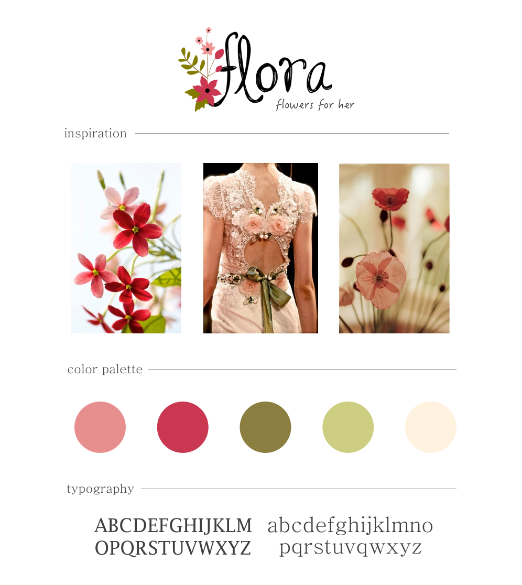

About the Brand
II wanted the brand to be geared toward women to embrace the majority of people who will actually received flowers. Adjectives I wanted the brand to embody were were feminine, of nature, fun yet sophisticated, and womanly not girly.
Choosing Brand Colors
With a focus on women and nature, I decided to go with two pinks and two greens, a light and a dark to add contrast. I also chose a light beige to serve as a neutral color between the two. Making sure that the pink was no too bright as to not be too girly and have the green resemble the stem of flower, I used the photos below as inspiration. I played around with the colors until I found the perfect mix.

Choosing Logo Font
I wanted to chose a curly font that was dainty and sophisticated and yet wasn’t too serious. I played around with different levels of curliness until I found the right choice.

Choosing Typography
This is where I really wanted to emphasize the sophistication and maturity of the brand’s image. I tried using a san serif font at first to stay follow web trends but felt a serif font conveyed sophistication much more clearly. I also wanted the base font to be dainty and light. This is why I chose a font with a naturally lighter regular font weight.

Pulling it all Together
I believe that I was able to successfully create a brand that was feminine, of nature, fun yet sophisticated, and womanly not girly. Here is the final brand board.
